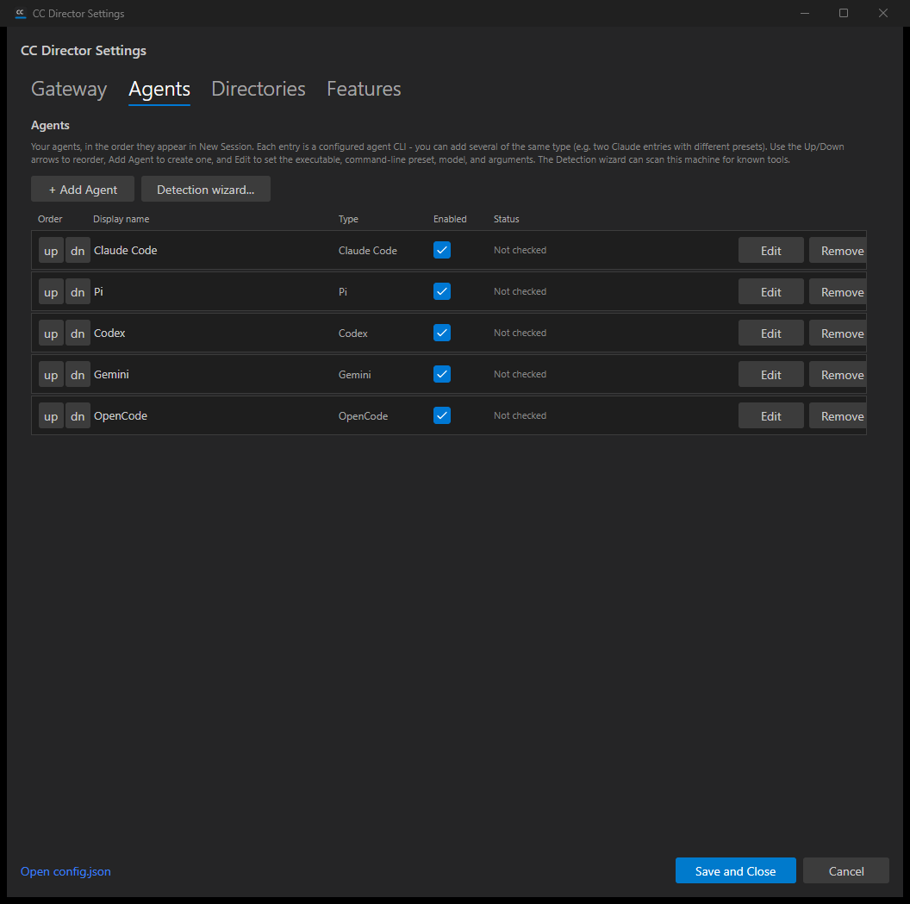
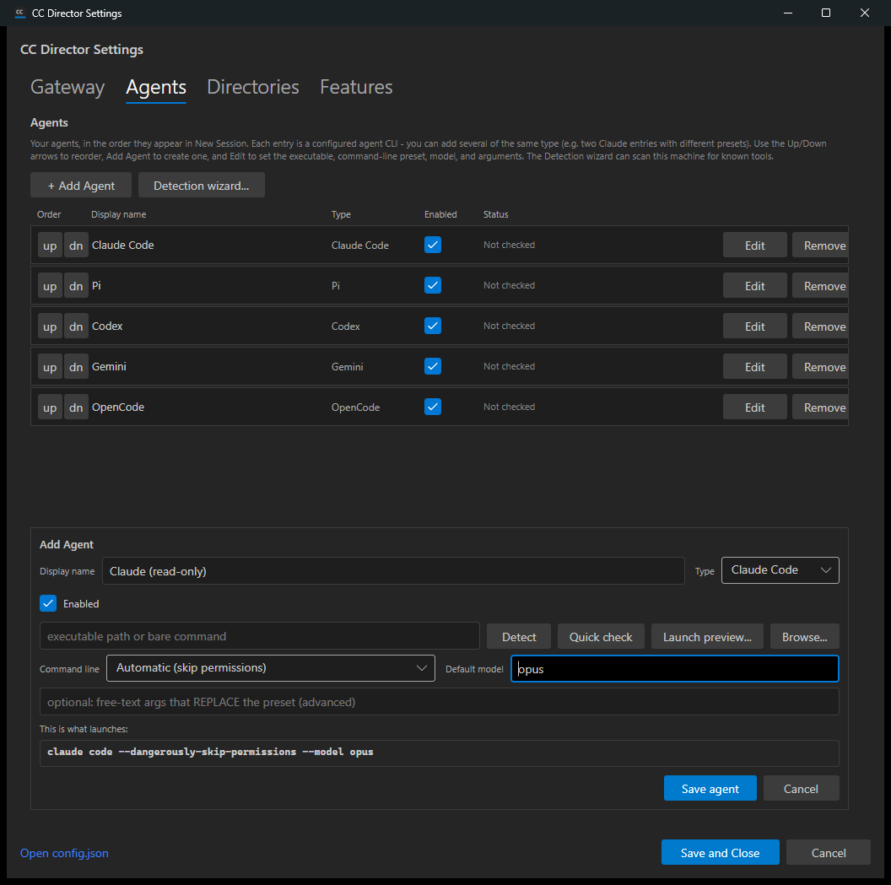
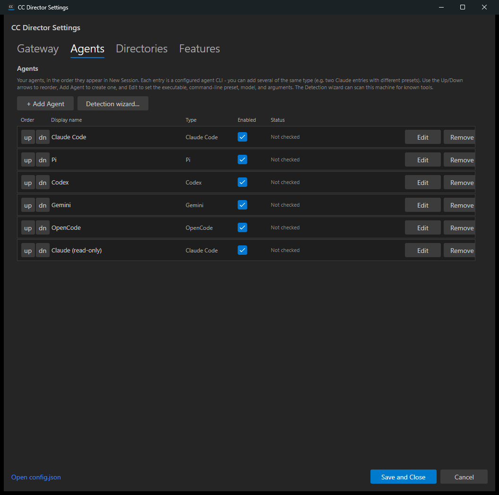
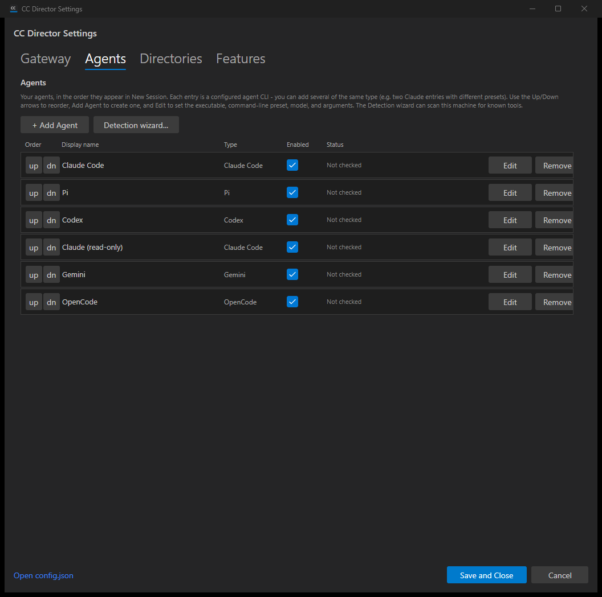
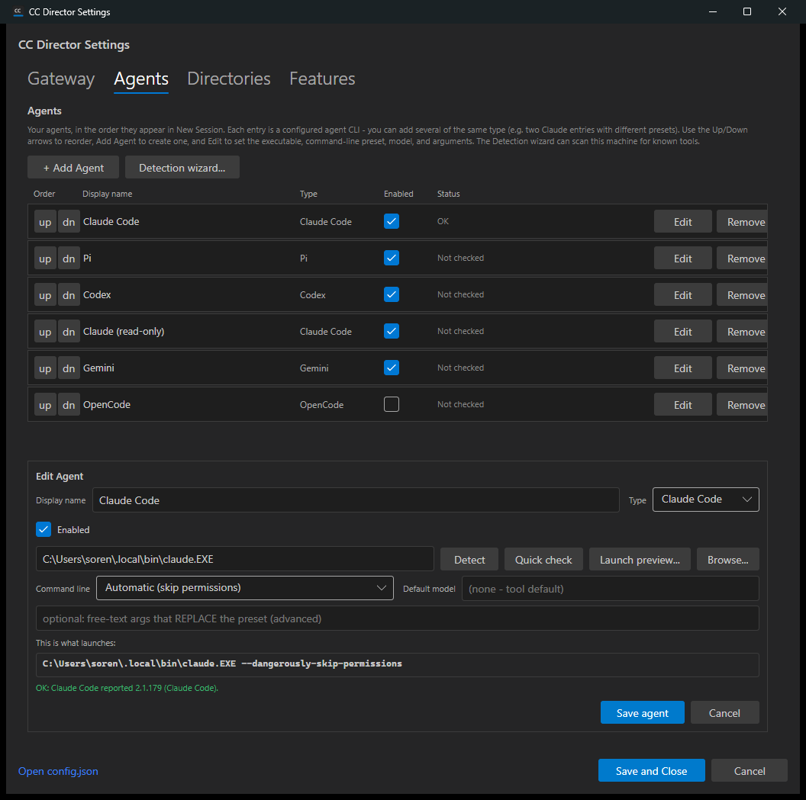
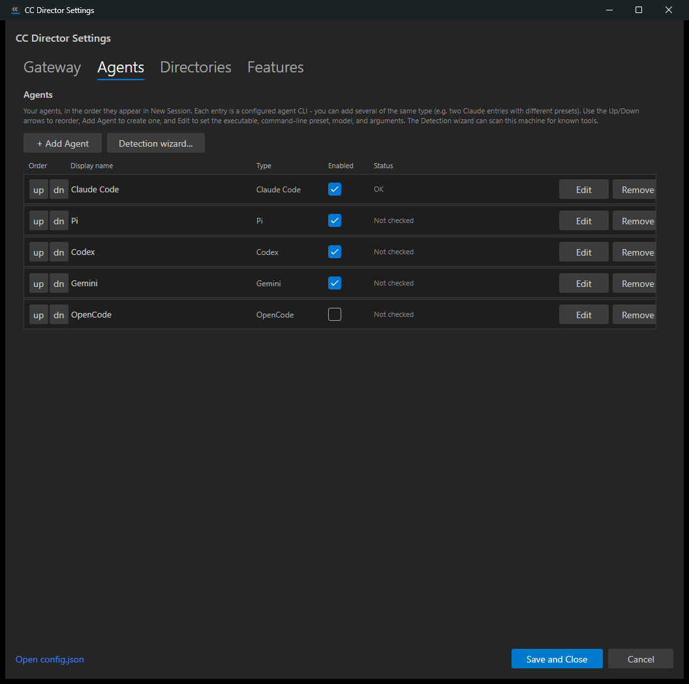

Developer Agent proof. Part 1 of 2: the data model, the one-time non-destructive migration, and the Settings > Agents CRUD UI. The New Session dialog change is part 2 (out of scope here).
AgentEntry + AgentEntryStore
(src/CcDirector.Core/Configuration/AgentEntry.cs). An ordered array under
agent.entries; each entry carries id (guid), display_name,
type (AgentKind incl. custom/RawCli), enabled,
executable_path, preset_id, default_model,
args_override. Order = array order.AgentEntryStore.LoadEntries() seeds the list one time from the
legacy *_path keys (order Claude, Pi, Codex, Gemini, OpenCode) when no
agent.entries exists; legacy keys are READ for the seed and intentionally LEFT in
place (safe rollback).SettingsDialog.axaml(.cs). Replaced the five
fixed cards with a list (Order Up/Down, Display name, Type, Enabled, Status, Edit, Remove),
a + Add Agent button, and an Add/Edit editor holding the per-entry fields (Display name,
Type, Enabled, Executable + Detect/Quick check/Launch preview/Browse, CLI preset, Default model,
Args override, and the live "This is what launches" preview strip).CcDirectorConfigService.MergePatch() so
unrelated config sections are preserved.AgentEntryStore.LoadEntries()/SaveEntries() exposes the ordered
entries to the rest of the app (consumed by part 2).| # | Criterion | Expected | Actual / Proof | Result |
|---|---|---|---|---|
| 1 | Migration from legacy *_path keys, in fixed order, writing agent.entries |
Opening Settings > Agents shows one row per legacy tool in order Claude, Pi, Codex, Gemini, OpenCode; config gains an agent.entries array. |
Seeded a config with only legacy *_path keys; opening the dialog migrated to 5 entries in the exact order, each with a distinct guid. See 01-migrated-list.png and the before/after config below. Also unit-tested. |
PASS |
| 2 | Add a second entry of the same type | + Add Agent -> "Claude (read-only)", type claude, model opus -> a second claude row coexists with the first; two entries with distinct ids. | Added "Claude (read-only)" (claude, model opus). Two claude rows shown; config has two ClaudeCode entries with distinct ids. See 02-add-editor.png, 03-two-claude-rows.png. | PASS |
| 3 | Up/Down reorder persists and survives reopen | Arrows reorder a row; new order persists to agent.entries. |
Moved "Claude (read-only)" up two positions (to slot 4); the persisted array order became Claude, Pi, Codex, Claude (read-only), Gemini, OpenCode. See 04-reordered.png and config dump. | PASS |
| 4 | Edit pre-filled; saving updates only that entry | Edit opens the editor pre-filled; changing model/args/preset updates that entry only. | Edit on the Claude Code row opened the editor pre-filled (name, type, enabled, path, preset). Other entries untouched. See 05-detect-quickcheck.png. Round-trip + isolation unit-tested (SaveEntries_RoundTrips_AllFields). |
PASS |
| 5 | Remove deletes the entry; others keep relative order | Remove deletes the row from list and agent.entries; the rest keep order. |
Removed "Claude (read-only)"; remaining 5 kept order Claude, Pi, Codex, Gemini, OpenCode. See 06-removed.png and the final config dump (no read-only entry). Also unit-tested. | PASS |
| 6 | Enabled toggles and persists per entry | The Enabled checkbox toggles and persists. | Toggled OpenCode's Enabled off; persisted as "enabled": false and reloaded unchecked on reopen. See config dumps. |
PASS |
| 7 | Detect / Quick check runs the existing ToolDetectionService and updates Status | Per-entry Detect/Quick check runs the existing flow and updates Status / agent_status. |
Detect found C:\Users\soren\.local\bin\claude.EXE; Quick check reported "OK: Claude Code reported 2.1.179". The list Status cell showed OK and agent_status.claude was persisted. See 05-detect-quickcheck.png. |
PASS |
| 8 | Unrelated config sections unchanged after saving agents | gateway, screenshots, legacy keys unchanged after an agents save. | Across every save, gateway (gw.proof.example, keep-me-token), screenshots (C:/ProofShots), and the legacy *_path keys were byte-for-byte preserved (MergePatch). See config dumps. Also unit-tested (SaveEntries_PreservesUnrelatedSections). |
PASS |
Built the solution clean (dotnet build cc-director.sln - 0 warnings, 0 errors) inside an
isolated worktree, ran the 7 new unit tests (all pass), then launched a per-session test Director
(slot 9, per CLAUDE.md rule 0b) pointed at an ISOLATED config root seeded with only the legacy
*_path keys - so nothing here touched the user's real config. Drove the live Settings
dialog via Windows UI Automation and captured screenshots at each step.
{
"gateway": { "url": "http://gw.proof.example:7878", "token": "keep-me-token" },
"screenshots": { "source_directory": "C:/ProofShots" },
"agent": {
"claude_path": "C:/proof/claude.cmd",
"pi_path": "C:/proof/pi.cmd",
"codex_path": "C:/proof/codex.cmd",
"gemini_path": "C:/proof/gemini.cmd",
"opencode_path": "C:/proof/opencode.exe"
}
}
"agent": {
"claude_path": "C:/proof/claude.cmd", ... (legacy keys retained),
"entries": [
{ "id": "0c7ab889...", "display_name": "Claude Code", "type": "ClaudeCode", "enabled": true, ... },
{ "id": "5539ae71...", "display_name": "Pi", "type": "Pi", "enabled": true, ... },
{ "id": "6dca1578...", "display_name": "Codex", "type": "Codex", "enabled": true, ... },
{ "id": "9460951f...", "display_name": "Gemini", "type": "Gemini", "enabled": true, ... },
{ "id": "10471a03...", "display_name": "OpenCode", "type": "OpenCode", "enabled": false, ... }
]
},
"agent_status": { "claude": { "ok": true, "version": "2.1.179 (Claude Code)", ... } }
// gateway + screenshots unchanged throughout
01 - Migrated list (one row per legacy tool, in order):

02 - Add/Edit editor with live "what launches" preview:

03 - Two Claude rows coexist after adding "Claude (read-only)":

04 - Reordered ("Claude (read-only)" moved up to slot 4):

05 - Detect + Quick check (Status OK, real claude.EXE detected, validation OK):

06 - Removed ("Claude (read-only)" removed; the rest keep order):

No architecture or security drift. Same containers (CcDirector.Core,
CcDirector.Avalonia), same round-trip-preserving writer
(CcDirectorConfigService.MergePatch), no new external surface, no security-rule change
(DT-01..DT-NN unaffected). No docs/cencon/ update required.
All 8 acceptance criteria are met. The solution builds clean (0 warnings, 0 errors), the 7 new unit tests pass, and every criterion was proven in the running app. I believe this is finished.